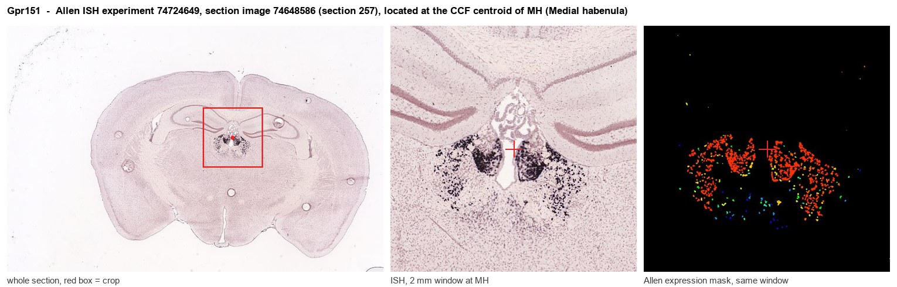
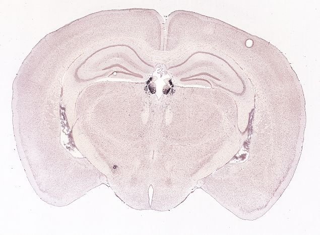
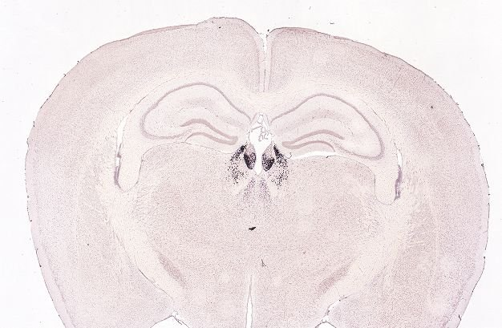
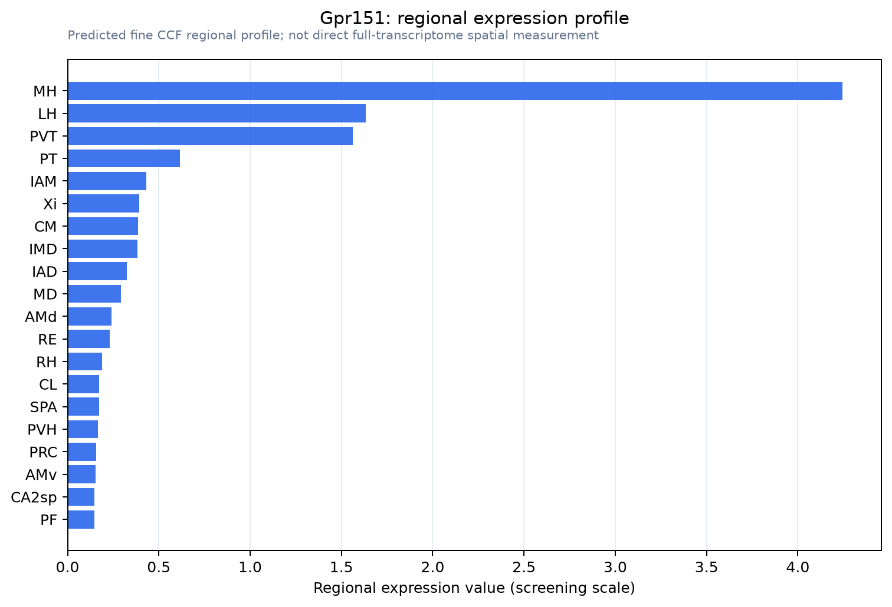

Gpr151
G protein-coupled receptor 151 protein (G protein-coupled receptor PGR7) (GPCR-2037)
Spatial tier: STRICT_EXCLUSIVE · Class: GPCR · Top region: MH (Medial habenula) · Positive regions: 3/554
52.3Discovery Score
51.3Targetability Score
CEvidence grade C
What this means: Gpr151: predicted fine-region profile is strict-exclusive, with 3 positive regions out of 554 (limit 12); direct spatial validation is required.
Function in MH: evidence, prediction, innovation
- Gene function
- GPR151 is an orphan class-A G protein-coupled receptor with no confirmed endogenous ligand. It couples to Gi/o and, unusually for a GPCR, is trafficked into axons and onto synaptic vesicle membranes rather than staying at the soma. It is one of the most habenula-restricted transcripts in the mammalian genome.
- Region function
- The medial habenula is an epithalamic relay whose cholinergic/substance P neurons project almost exclusively through the fasciculus retroflexus to the interpeduncular nucleus. This MHb-IPN axis sets nicotine aversion and withdrawal, fear memory expression, anxiety and negative affect.
- Published in this region
- direct Broms et al. 2015 (J Comp Neurol) showed that GPR151 is confined to habenular neurons and their fasciculus retroflexus axons across vertebrates. Antolin-Fontes et al. 2020 (PNAS) found GPR151 at presynaptic membranes and synaptic vesicles, where it associates with release and ion-transport machinery; Gpr151 deletion reduced evoked transmission, increased spontaneous miniature currents, eliminated nicotine-induced short-term plasticity and changed nicotine intake. Allain et al. 2022 (Sci Rep) implicated GPR151 together with the mu opioid receptor in habenular control of social reward.
- Predicted function
- Prediction: GPR151 acts as a presynaptic Gi/o brake on the habenulo-interpeduncular terminal, tuning release probability and the plasticity that nicotine induces there. Habenula-restricted knockdown should raise nicotine self-administration and shift responses to aversive and inflammatory challenges; an agonist, once a ligand is found, would be an unusually region-selective way to dampen MHb output without affecting the rest of the brain.
- Innovation
- ★★☆☆☆ 2/5 GPR151 is already a recognised habenular target, although it is still an orphan with no pharmacology, leaving deorphanisation-based work open.
- Tools
- Gpr151 knockout mice and habenula-restricted AAV re-expression (Antolin-Fontes 2020; Rios 2026); Gpr151 BAC-transgenic and reporter lines from the Ibanez-Tallon laboratory; validated GPR151 antibodies; no selective agonist or antagonist yet.
- References
Direct evidence located at the region

Allen ISH experiment 74724649, section image 74648586 (section 257): the section that contains the CCF centroid of Medial habenula according to the Allen image-to-atlas alignment (reference_to_image), with a 2 mm window around that point. Left: whole section, red box = window. Middle: ISH signal. Right: Allen's expression-mask view of the same window. open this image in the Allen viewer
Look it up yourself: Allen Mouse Brain ISH for Gpr151Allen reference atlas: MH (structure 483)ABC Atlas MERFISH viewer(in the ABC Atlas choose dataset MERFISH-C57BL6J-638850-CCF, colour cells by gene "Gpr151" or by parcellation_substructure "MH")All genes confined to MH + 3-D brain
Direct spatial evidence
MERFISH REGION LOCATOR

DIRECT ALLEN ISH

DIRECT ALLEN ISH

Regional expression figure

Predicted WMB × fine-CCF profile; not direct full-transcriptome spatial measurement.
Spatial profile
Evidence and specificity
- Evidence status
- PREDICTED_FINE
- Direct sources
- None; predicted localization only
- Exclusive threshold
- 12 positive regions out of 554
- Spatial specificity
- 0.510
- Top-region fraction
- 0.298
- Filter status
- PASS
Interpretation limits
- Cell-type-to-region projection is imputed expression, not direct spatial measurement.
- Adult reference atlases do not establish stability across age, sex, strain, state, or disease.
- Transcript abundance does not guarantee protein abundance or genetic-tool performance.